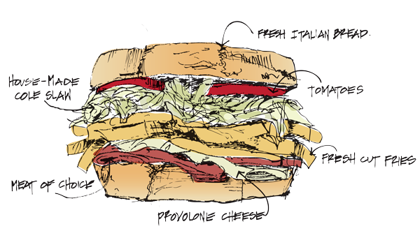
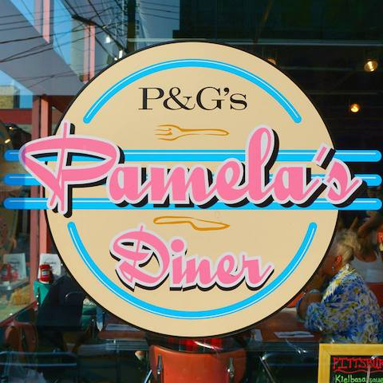
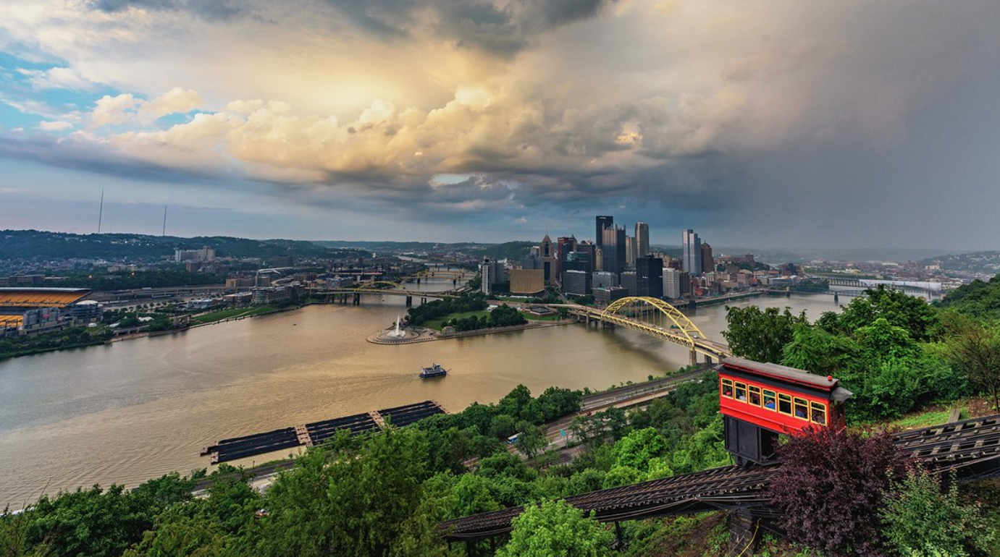
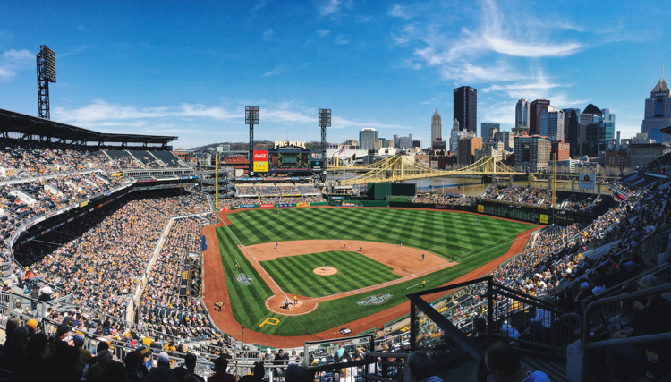
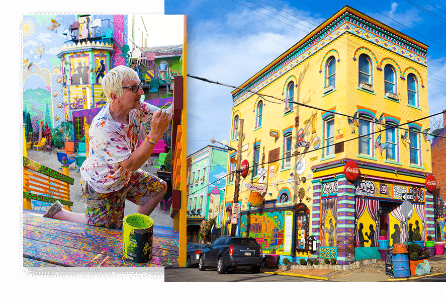

Hi! Welcome to my website about the best places to visit in Pittsburgh. It's great to have you here! I’m a lifelong Pittsburgh resident, and am fiercely in love with the city.
I’ve spent countless hours exploring the city, and this is a my must-hit list: a non-comprehensive list of things that love to do while I’m home, and try to do as often as possible. Enjoy!
No matter the time of week or year, the strip district is a must-hit during your visit to Pittsburgh.
The Strip District is one of the culinary capitals of Pittsburgh, with a mix of cuisine largely inspired from the city’s strong Polish and Italian roots.
The strip district would be the place to start your Pittsburgh visit off right with a pancake from Pamela’s pancakes, or maybe you’re the type that skips breakfast and goes right for the throat–I don’t judge. If that sounds more your speed, you could go a few blocks down from Pamela’s to Primanti Bros Sandwiches, where you can get a truly one-of-a-kind sandwich piled high with fries and coleslaw.
 Mount Washington is one of the stops on this list that makes Pittsburgh truly unlike any other city.
The city center itself is built at the intersection of 3 rivers, referred to locals as “the point”, and right across one of those rivers [the Monongahela River, if you were wondering] is a quarter-mile tall riverbank, carved by millennia of the 3 rivers flowing. At the top of this pseudo-riverbank, pseudo-mountain is Mount Washington.
There are a variety of things to do at Mount Washington, including riding an incline up the bank (hours included below image), in addition to a multitude of different restaurants and ice cream shops, but the main attraction is unequivocally the view yielded from one of the several viewing decks. I didn’t really fall in love with Pittsburgh until the first time I went to the top of Mount Washington in the late afternoon with a friend, set up a hammock, and watched the sunset over the city as golden hour slipped into dusk, which slipped into evening.
| Weekday | Hours |
|---|---|
| Monday – Saturday | 5:30am – 12:30am |
| Sunday | 7:00am – 12:30am |
Think of Lawrenceville like a younger Strip District–this is a really interesting area, another culinary hub of the city. It’s in close proximity to young startups and Silicon Valley giants alike, making it an exciting and high-energy part of Pittsburgh.
Lawrenceville is an interesting, burgeoning community just to the north of the Downtown Pittsburgh area. It’s where you’d go for the best Banh Mi (a Vietnamese Sandwich), Poke (deconstructed sushi bowls), Boba Tea (I think most people know what this is) and much, much more!
PNC Park, unlike the team it houses, the Pittsburgh Pirates, is actually one of the city’s claims to fame.
Widely regarded as one of the better stadiums in baseball, PNC Park opens up to a stunning view of the Pittsburgh Downtown cluster of buildings.
I put this on a list for an out-of-towner because despite the fact that the Pirates most likely won’t be the team you’ll be rooting for, nothing will console you like watching them get brutally defeated against pretty much any team they play, all while enjoying a breathtaking view!
Randyland might be my favorite place to recommend to out-of-towners. Although words can’t really describe this place, my assignment is to describe it, so I’m going to do my best.
In 1995 Randy Gilson bought a building for $10,000 on a credit card in the then-impoverished North Side of Pittsburgh. His mission was simple–to bring people together with the city’s largest piece of public art, but he had a major obstacle–he didn’t have any money.
His solution was to repurpose garbage that he found in his community as parts of his ‘exhibit’, the building he owned and lived in.
Some quick facts about Randyland:
I went here for the first time last summer, and absolutely loved it. It’s a colorful amalgamation of garbage repurposed by Randy’s imagination that brings joy to everybody who visits it.